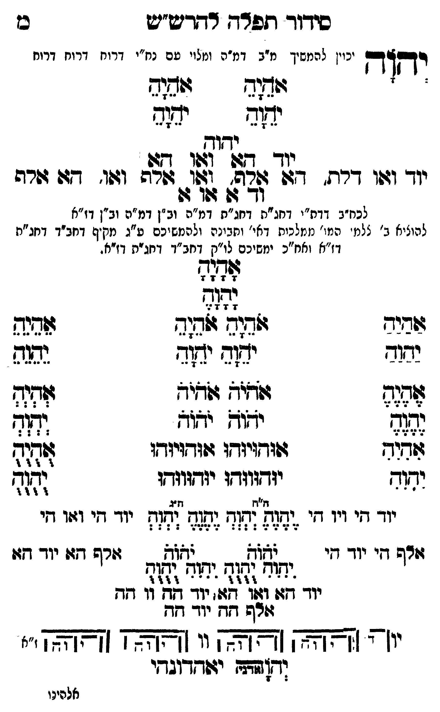

Neue Klartextfassung
יְהוָה [יכוין להמשיך מ"ב דמ"ה ומלויו עם נח"י דרוח דרוח דרוח] === טבלה === [טור ימין] אָהָיָהָ יָהָוָהָ [טור אמצעי] [טור שמאל] אָהָיָהָ יָהָוָהָ === סוף טבלה === יהוה יוד הא ואו הא יוד ואו דלת, הא אלף, ואו אלף ואו, הא אלף וד א או א [לכח"ב דדת"י דחג"ת דחג"ת דמ"ה וב"ן דמ"ה וב"ן דז"א] [להעלות ב' צלמי המו' ממלכות דאי' ותבונה ולהמשיכם ע"ג מקיף דחב"ד דחג"ת דז"א וחו"ב ימשיכם לו"ק דחב"ד דחג"ת דז"א.] === טבלה === [טור ימין] אַהַיַהַ יַהַוַהַ אֶהֶיֶהֶ יֶהֶוֶהֶ אִהִיִהִ יִהִוִהִ [טור אמצעי] אָהָיָהָ יָהָוָהָ אֹהֵיָהֵ אֹהֵיָהֵ יֹהֵוָהֵ יֹהֵוָהֵ אֹהֹיֹהֹ אֹהֹיֹהֹ יֹהֹוֹהֹ יֹהֹוֹהֹ אוּהוּיוּהוּ אוּהוּיוּהוּ יוּהוּווּהוּ יוּהוּווּהוּ [טור שמאל] אֵהֵיֵהֵ יֵהֵוֵהֵ אְהְיְהְ יְהְוְהְ אֻהֻיֻהֻ יֻהֻוֻהֻ === סוף טבלה === === טבלה === [טור ימין] יוד הי ויו הי אלף הי יוד הי [טור אמצעי] [ה"ח ה"ג] יֶהֶוֶהֶ יְהְוְהְ יֶהֶוֶהֶ יְהְוְהְ יֹהֹוֹהֹ יֹהֹוֹהֹ יִהִוִהִ יֻהֻוֻהֻ יִהִוִהִ יֻהֻוֻהֻ יוד הא ואו הא יוד הה וו הה אלף הה יוד הה [טור שמאל] יוד הי ואו הי אלף הא יוד הא === סוף טבלה === [תרשים: ארבעה צירופי יהוה בקווים אופקיים ואנכיים המחברים את האותיות. לצדי התרשים וי וי וי וי; ז"א.] יאהדונהי יהוה (אדני)
Original gegen neue OCR · Niqqud für Vergleich ausgeblendet
Original
יהוה [יכויןK084-001 להמשיך מ"ב דמ"ה ומלויוK084-002 עם נח"י דרוח דרוח דרוח] === טבלה === [טור ימין] אהיה יהוה [טור אמצעי] [טור שמאל] אהיה יהוה === סוף טבלה === יהוה יוד הא ואו הא יוד ואו דלת, הא אלף, ואו אלף ואו, הא אלף וד א או א [לכח"בK084-003 דדת"י דחג"ת דחג"ת דמ"ה וב"ן דמ"ה וב"ן דז"א] [להעלותK084-004 ב' צלמי המו' ממלכותK084-005 דאי' ותבונהK084-006 ולהמשיכם ע"ג מקיף דחב"ד דחג"ת דז"א וחו"בK084-007 ימשיכם לו"ק דחב"ד דחג"ת דז"א.] === טבלה === [טור ימין] אהיה יהוה אהיה יהוה אהיה יהוה [טור אמצעי] אהיה יהוה אהיה אהיה יהוה יהוה אהיה אהיה יהוה יהוה אוהויוהו אוהויוהו יוהוווהו יוהוווהו [טור שמאל] אהיה יהוה אהיה יהוה אהיה יהוה === סוף טבלה === === טבלה === [טור ימין]K084-008 יוד הי ויו הי אלף היK084-009 יוד הי [טור אמצעי] [ה"ח ה"ג] יהוה יהוה יהוה יהוה יהוה יהוה יהוה יהוה יהוה יהוהK084-010 יוד הא ואו האK084-011 יוד ההK084-012 וו הה אלף הה יוד הה [טור שמאל] יוד הי ואו הי אלף הא יוד הא === סוף טבלה === [תרשים: ארבעה צירופי יהוה בקווים אופקיים ואנכיים המחברים את האותיות. לצדי התרשים וי וי וי וי; ז"א.] יאהדונהי יהוה (אדני)K084-013
OCR · fehlbar
סידוךד תפדח דדדש"יש כז יקדדץ יכויןK084-001 להמשיך מ"ב דמ"ה ונזלויK084-002 עם נח"י דרוח דרוח דרוח ז צגיב תמב יד(ף ימ(ב יקוב ש(שזדש[[[גל([(קש יוך ו4פו דרת. 7ב: שרפה. ואו. גרש וגו. דזה זורה ודך ש גוו 4( לכח"בK084-003 דדת"י דחג"ת דחג"ת דמ"ה וב"ן דמ"ה וב"ן דו"א להוציאK084-004 ב' צלמ המ:' ממלביתK084-005 דאי' וחבינהK084-006 ולהמשיכם ע"ג מקיף דחב"ד דחג"ת דז"א זאח"כK084-007 ימשיכם לו"ק דחב"ד דחגית דז"א. צג ]ל[ שבזיב וגוג ((ח(ג אגנש יגוד יש( יזד נבגה ל0ג: צדך ולנגב עלל 3. ([ג -:- 33 [ואיש זווד:יגדו גזודזיזדו ([- ימוד יגדוווד: יודווודו לל י יי י ' י(זל זז( :זז (זז9 י' ' ייי יי זזרש זיK084-008 יוד זי לשלא לשלא יורש דזוK084-009 יוד דזו קוח ודש ישוח ואח יי[ [[[ץז זאאן[6 0[[]K084-010 יוד דז: וו 7ו) יודך דח וו זח שרש גזזK084-011 יוד זד יו' [זצזצא] זצצצא:)K084-012 וו [[צצא' (זצזצא] ' (ג[שהן ישדדובדי אלהינוK084-013